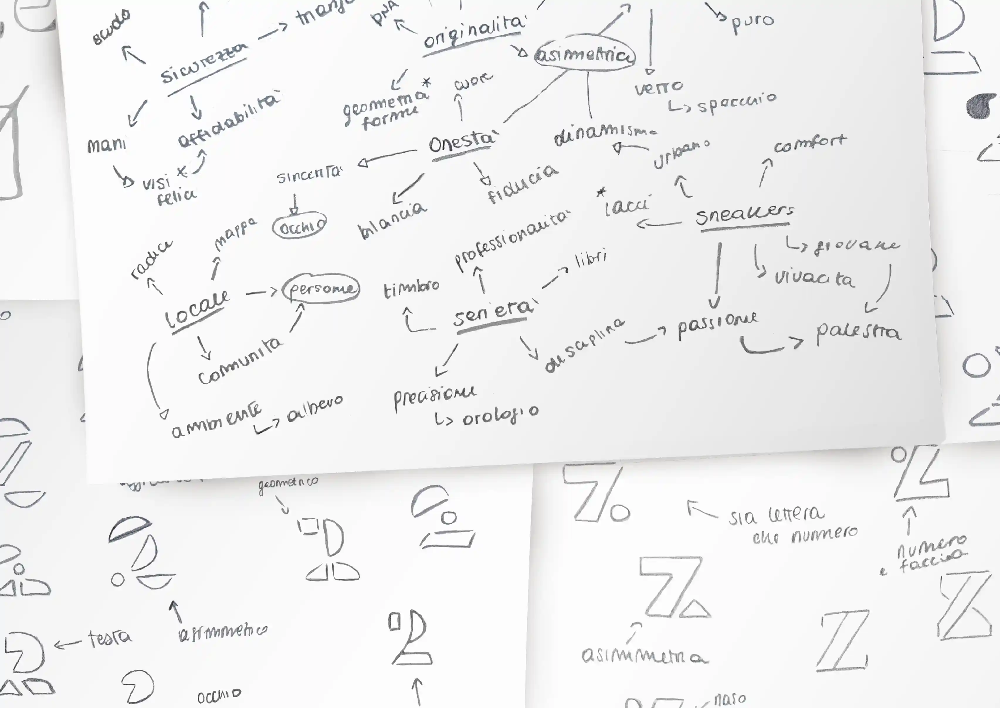
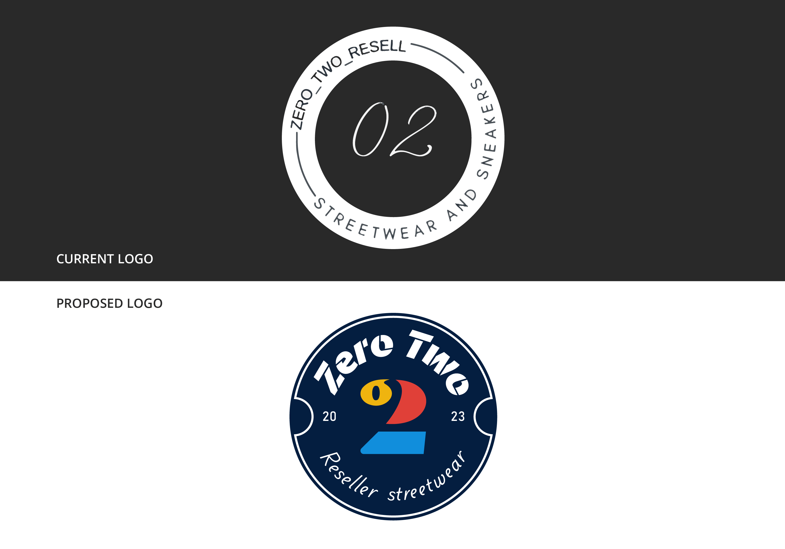
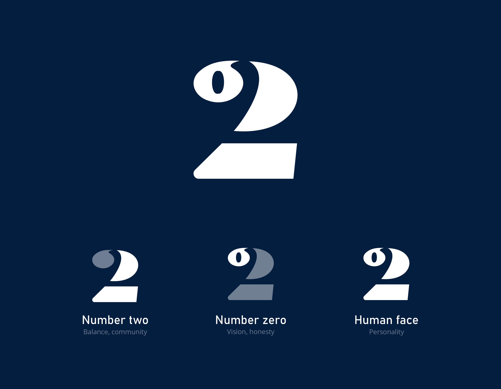
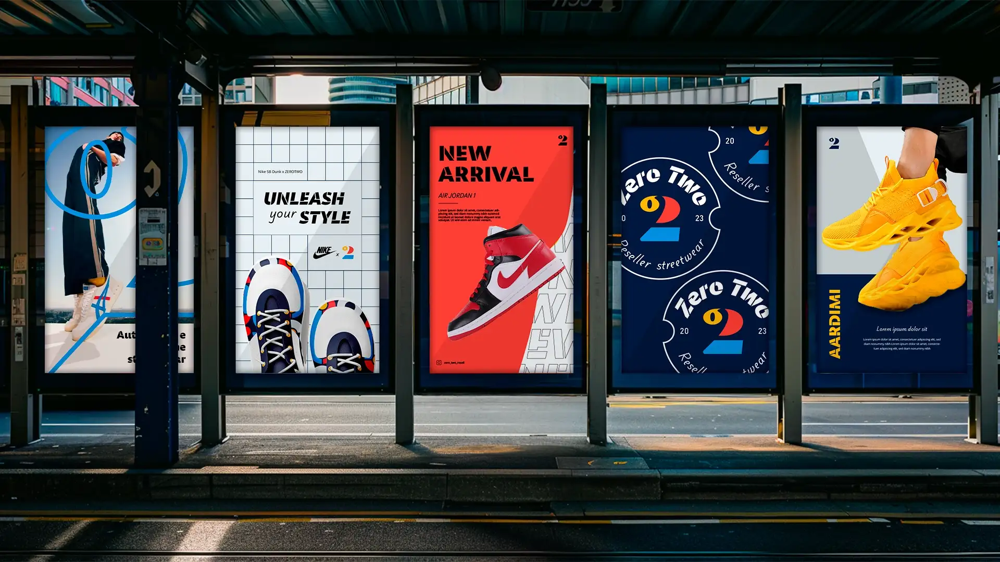
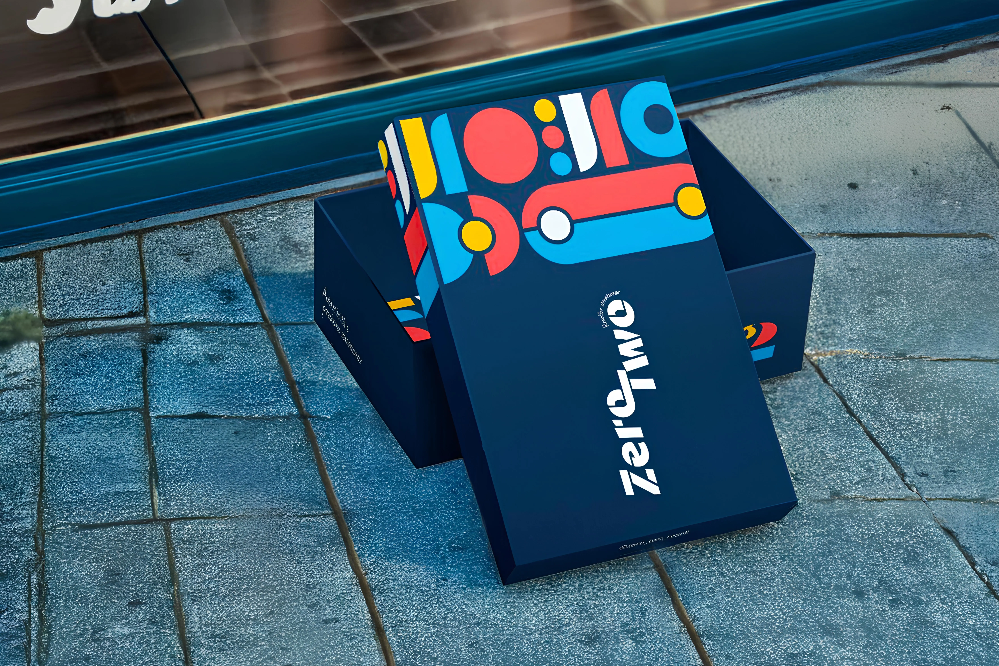
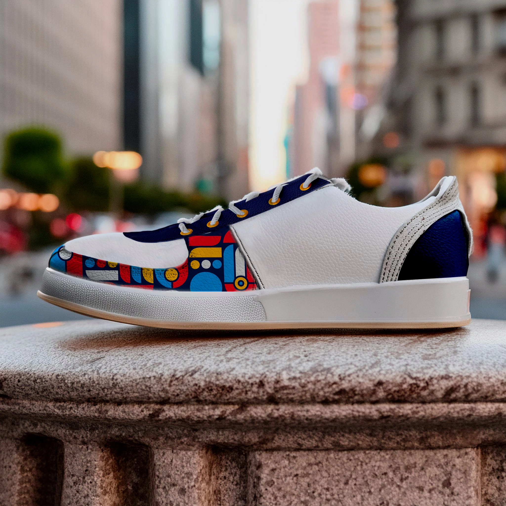
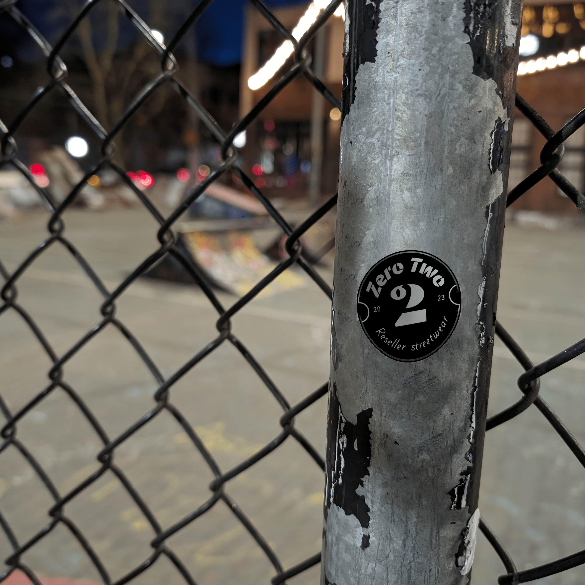

Project duration
May - June 2024
Services
Brand Design


The concept
Zero Two is a dynamic company specializing in the resale of authentic, high-quality sneakers, with a focus on exclusive styles and fashion trends. Founded by a sneaker enthusiast, the company identified an opportunity in the resale market to provide customers with original and trendy products. To strengthen its brand identity, Zero Two has embarked on a brand design project that reflects its values and appeals to a young, fashion-forward audience.
The logo mark I developed for Zero Two represents a creative and functional interpretation of the number two. The design features a geometric "2" composed of a circle, a semicircle, and a rectangle, with the initial circle also serving as "0". This configuration not only meets the client's request to prominently integrate the number two but also introduces a distinctive element: the initial circle subtly evokes an eye, giving the logo a playful hint of a face. This detail adds an appealing touch to the overall design, emphasizing the fun and distinctive aspect of the Zero Two brand.

Type & colors
Drawing inspiration from iconic colors in the sneaker world and youth trends, I've crafted a palette that exudes energy and vitality. Vibrant shades of blue, yellow, and red were chosen to balance dynamism with a fresh and contemporary aesthetic. This choice aims to captivate Zero Two's youthful audience, communicating enthusiasm and reliability in a distinctive manner. This approach not only strengthens the brand's identity but also ensures consistency and engagement across all digital and print platforms, perfectly aligned with Zero Two's vision in the market of authentic and trendy sneakers.
The chosen font adds robustness and modernity to the overall visual identity, while the geometric shapes echo the precision and structure of the logo mark.




Testimonial
Here are some lovely words from the founder, Alessandro:
"Working with Giulia has been a truly pleasant experience. Her creativity and availability were by far the most appreciated aspects of her brand design service. Every expectation I had was surpassed, thanks to her professionalism and attention to detail. I had no doubts about Giulia's reliability, and the result confirmed my expectations. I felt guided and advised impeccably throughout the entire process. I couldn't be happier!"